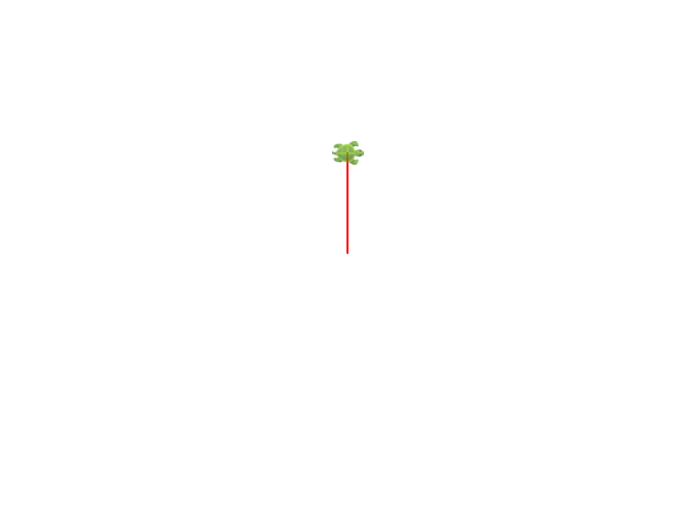
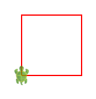
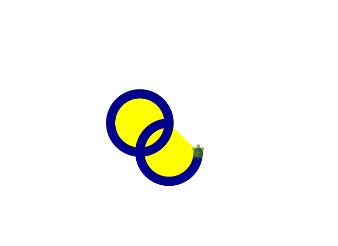
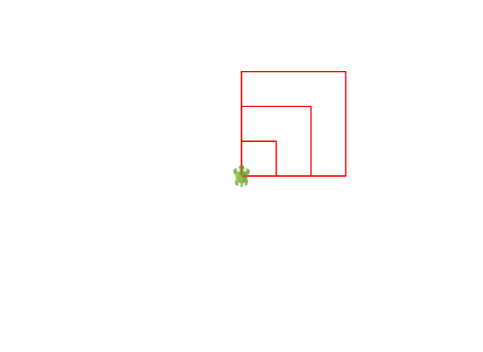
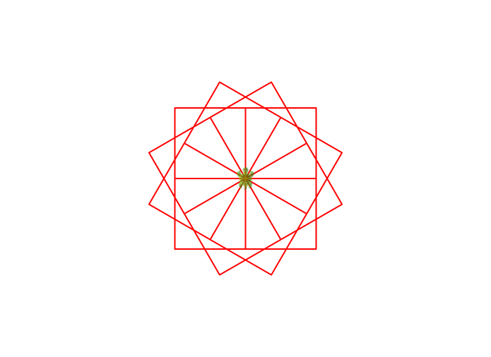
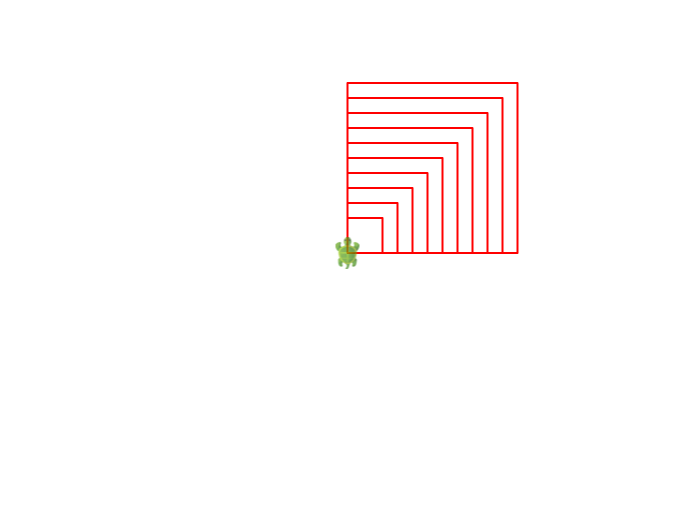

Ekranın ortasında sizi bekleyen küçük bir kaplumbağa var. Komut verirseniz yürüyor, yürürken de çiziyor. Bu bölümde ona kareler, yıldızlar ve çiçekler çizdireceğiz — ve farkında olmadan programlamanın bütün yapıtaşlarını öğrenmiş olacaksınız: değer, tür, işlev, yineleme. Sonunda da bilgisayarla bir oyun oynayacağız.
Koco'yu açın, aşağıdaki üç satırı yazın ve çalıştırın:
sil() // tuvali temizle, kaplumbağayı başa getir
ileri(100) // 100 adım ileri
sağ() // 90 derece sağa dönTuvalde bir çizgi belirdi ve kaplumbağa artık doğuya bakıyor. Hepsi bu: kaplumbağa baktığı yöne yürür, yürürken kalemiyle iz bırakır. Şimdi bir kare çizelim. En kestirme yol, dört kere “ileri ve dön” demek:
sil()
yinele(4) {
ileri(100)
sağ()
}
yinele(4) { … } kıvrık parantezin içindeki komutları
dört kere çalıştırır. Kısa, okunaklı ve Türkçe bir cümle gibi:
“dört kere yinele: ileri git, sağa dön.”
İkisinin tuvaldeki hâli şöyle:

ileri(100) tek çizgi bıraktı;
kaplumbağa sağ() ile doğuya döndü, bekliyor.

yinele(4)'ün işi. Kaplumbağa başladığı
köşede, başladığı yöne dönmüş olarak durur — dört dönüş
tam 360 derece.
Kaplumbağanın epey marifeti var; en çok kullanacaklarınız şunlar:
| Komut | Ne yapar |
|---|---|
ileri(100), geri(50) |
Baktığı yönde yürür (iz bırakarak) |
sağ(45), sol(30) |
Olduğu yerde döner; sayı vermezseniz 90 derece |
zıpla(50) |
Kalemi kaldırıp yürür: iz bırakmaz |
atla(x, y) |
Çizmeden (x, y) noktasına gider |
daire(60), yay(60, 120) |
Yarıçapı verilen daireyi ya da yayı çizer |
kalemRenginiKur(mavi) |
Kalemin rengini değiştirir |
boyamaRenginiKur(sarı) |
Kapalı şekillerin içini boyar |
kalemKalınlığınıKur(4) |
Çizginin kalınlığını ayarlar |
canlandırmaHızınıKur(10) |
Kaplumbağayı hızlandırır (100 adımın süresi, milisaniye) |
sil() |
Tuvali temizler, kaplumbağayı eve gönderir |
Renkler de hazır: mavi, kırmızı,
sarı, yeşil, mor,
turuncu, camgöbeği… Bir de
rastgeleRenk var — her çağrıda başka bir renk verir.
Deseninizin her koluna bir kalemRenginiKur(rastgeleRenk)
koyun, ne olacağını görün.
Tablodaki komutların çoğunu tek seferde deneyen sekiz satırlık bir program — ve tuvalde bıraktığı iz:
sil()
hızıKur(orta)
kalemRenginiKur(Renkler.koyuMavi)
boyamaRenginiKur(sarı)
kalemKalınlığınıKur(19)
daire(60)
sol()
yay(60, 270)
hızıKur(orta)
da canlandırmaHızınıKur'un sözle söyleneni:
yavaş, orta, hızlı,
çokHızlı olur.
tanım
Kare çizen kodu her seferinde yeniden yazmak olmaz. Ona bir ad
verelim ki tek sözcükle çağırabilelim. İşte ilk çekirdek sözcüğümüz:
tanım. (Scala'daki özgün adı def; Koco
ikisini de anlar, biz Türkçesini kullanacağız.)
tanım kare(kenar: Sayı) = {
yinele(4) {
ileri(kenar)
sağ()
}
}
sil()
kare(50)
kare(100)
kare(150) // iç içe üç kare
kare artık bir komut: girdisi var
(kenar), işi var (dört kenar çizmek). Girdinin yanındaki
: Sayı ise girdinin türü — kenar bir
tam sayı olmalı, yazı ya da renk değil. Türlere birazdan döneceğiz.
Şimdi asıl güzellik. Madem kare(100) tek komut, onu da
yineleyebiliriz:
sil()
canlandırmaHızınıKur(10)
yinele(12) {
kare(100)
sağ(30) // 12 × 30 = 360: tam tur
}On iki kare, her biri 30 derece dönük: bir çiçek. Dört satırlık kodun böyle bir şey çizmesi ilk seferinde insanı hep şaşırtıyor. Kaç kere döneceğinizi bilmek isterseniz sayaçlı yineleme de var:
sil()
yineleDizinli(10) { k => // k: 0, 1, 2, ... 9
kare(20 + 15 * k) // her kare bir öncekinden büyük
}
kare(50), kare(100), kare(150).


k büyüdükçe kare büyüyor:
20, 35, 50…
Biriniz kâğıda bir desen çizsin — makul olsun: iç içe üçgenler, bir merdiven, bir yel değirmeni. Öteki onu koda çevirsin. Sonra roller değişsin. Kâğıttaki şekli koda çevirirken sorduğunuz sorular (“şimdi kaç derece dönmeli?”) tam olarak programcı sorularıdır.
İkinci çekirdek sözcük: dez, yani değişmez
değer (Scala'daki adı val). Bir şeye ad takar ve
o ad artık hep o değeri gösterir:
dez kenar = 80
dez boşluk = kenar / 4
dez ad = "kelebek"
satıryaz(ad) // çıktı penceresine yazar
satıryaz(kenar + boşluk) // 100
satıryaz(s"kenar $kenar, boşluk $boşluk") // yazı kalıbı
Son satırdaki s"…" bir yazı kalıbı: içindeki
$kenar yazının ortasına değerin kendisini koyar. Çıktıya bir
şey yazdırmanın en tatlı yolu budur.
Dikkat ederseniz dez kenar = 80 yazarken tür söylemedik.
Scala türü kendisi çıkarır: 80 bir Sayı,
"kelebek" bir Yazı. Tür yine var — sadece
çoğu zaman yazmak zorunda değilsiniz. En çok göreceğiniz türler:
| Tür | Ne tutar | Örnek |
|---|---|---|
Sayı | Tam sayı | 16, -3 |
Kesir | Kesirli sayı | 1.72 |
Yazı | Harf dizisi | "merhaba" |
Harf | Tek harf | 'B' |
İkil | doğru ya da yanlış | 5 > 3 |
Uzun, İriSayı | Büyük tam sayılar | birazdan… |
Kardeş kitapçıkta C++'ın int türünün taşmasını görmüştük.
Kötü haber: Sayı da aynı 32 bitlik kutuda yaşıyor.
Tahmin edin, sonra çalıştırın:
dez a = 2000
satıryaz(a * a * a) // 2000'in küpü... öyle mi?
dez iri: İriSayı = 2000 // istediği kadar büyüyebilen tür
satıryaz(iri * iri * iri)-589934592
8000000000
Evet: eksi! Sayaç doldu ve başa döndü — C++'taki taşmanın
(overflow) ta kendisi, aynı sayıyla, aynı sonuçla. Diller değişir,
bilgisayarın belleği değişmez. İriSayı ise dilediği kadar
basamak kullanır; yarışmalardaki “büyük sayı” sorularının
Scala'daki kestirmesi budur.
den
dez ile tanımlanan bir ada yeni değer veremezsiniz;
denerseniz Koco daha çalıştırmadan itiraz eder. Bu bir eksiklik değil,
bu kitapçığın en önemli fikirlerinden biri: değişmeyen değere
güvenilir. Kimin ne zaman değiştirdiğini düşünmek zorunda
kalmazsınız, çünkü kimse değiştiremez.
Yine de arada gerçekten değişen bir şey gerekir; onun için de
den var: değişken (Scala'daki adı
var). Kural şu: önce dez deneyin;
den'e ancak mecbur kalınca dönün. Bu bölümün
sonunda bir kere mecbur kalacağız.
kare bir şeyler yapıyordu. İşlevlerin asıl gücü ise
bir şeyler hesaplamak: girdi al, çıktı ver.
tanım topla(a: Sayı, b: Sayı) = a + b
tanım bölünüyorMu(sayı: Sayı, bölen: Sayı) = sayı % bölen == 0
satıryaz(topla(3, 5)) // 8
satıryaz(bölünüyorMu(15, 5)) // doğru
satıryaz(bölünüyorMu(16, 5)) // yanlış
return gibi bir sözcük aramayın: Scala'da işlevin gövdesi bir
deyiştir ve değeri neyse çıktı odur. a + b yazdınız,
çıktı a + b. Kısa işlevler tek satıra sığar ve matematikteki
tanımlar gibi okunur — işlevsel üslubun ilk tadı.
Karar vermek için üçüncü ve dördüncü çekirdek sözcükler:
eğer ve yoksa (if/else). Bunlar da
deyiş; yani bir değer üretirler:
tanım enİri2(a: Sayı, b: Sayı) = eğer (a > b) a yoksa b
tanım işaret(s: Sayı) =
eğer (s > 0) "artı"
yoksa eğer (s < 0) "eksi"
yoksa "sıfır"
satıryaz(enİri2(7, 3)) // 7
satıryaz(işaret(-5)) // eksiProject Euler'in birinci sorusu: 1000'den küçük, 3'e ya da 5'e tam bölünen bütün sayıların toplamı kaç? Kardeş kitapçıkta bunu bir döngüyle çözmüştük. İşlevsel üslupta döngü bile yok:
dez toplam = (1 |- 1000) // 1'den 1000'e kadar (1000 hariç)
.ele(s => bölünüyorMu(s, 3) || bölünüyorMu(s, 5)) // uyanları ele: süz
.topla // hepsini topla
satıryaz(toplam) // 233168
Satır satır okuyun: 1'den 1000'e kadar sayılardan, 3'e ya da 5'e
bölünenleri ele; topla. Kod, sorunun Türkçesiyle neredeyse birebir.
ele ve arkadaşlarını II. Bölüm'de derinlemesine göreceğiz;
şimdilik tanışmış olun. (|| “ya da” demek,
&& de “ve” — C++'taki
or/and sözcüklerinin imgeli halleri.)
Bu soruyu “3'e bölünenler + 5'e bölünenler” diye iki ayrı
toplamla çözerseniz 15'e bölünenleri iki kere saymış olursunuz.
Kardeş sınıfta bu hatayı gerçekten yaptık. Yukarıdaki
ele'li çözümde bu tuzak kurulamıyor bile —
her sayı bir kere elenir ya da kalır. İyi araç, bazı hataları
yazılamaz hâle getirir.
Bilgisayar 1 ile 100 arasında bir sayı tutsun, siz bulmaya çalışın. Kaplumbağa bu sefer dinlensin; oyun çıktı penceresinde geçiyor:
dez tutulan = rastgele(100) + 1 // 1..100 -- "gizli" diyemezdik: o bir anahtar sözcük!
den hak = 7 // işte o mecbur kaldığımız den!
den bulundu = yanlış
satıryaz("1 ile 100 arasında bir sayı tuttum. 7 hakkın var.")
yineleDoğruysa(hak > 0 && !bulundu) {
dez tahmin = sayıOku("Tahminin?")
hak = hak - 1
eğer (tahmin == tutulan) {
bulundu = doğru
satıryaz(s"Bildin! Hem de $hak hakkın artmıştı.")
} yoksa eğer (tahmin < tutulan)
satıryaz(s"Daha büyük. Kalan hak: $hak")
yoksa
satıryaz(s"Daha küçük. Kalan hak: $hak")
}
eğer (!bulundu) satıryaz(s"Hakkın bitti. Tuttuğum sayı $tutulan idi.")
yineleDoğruysa, koşul doğru kaldıkça yineler — C++'taki
while'ın Koco'daki karşılığı. sayıOku sizden bir
sayı ister, rastgele(100) 0 ile 99 arasında bir sayı verir.
Ve evet, iki tane den kullandık: oyunun durumu
(kalan hak, bulundu mu) gerçekten değişiyor. Değişen şeye değişken demek
günah değil; alışkanlık hâline getirmek günah. Bir ayrıntı daha: tutulan
sayıya gizli diyemedik, çünkü gizli Koco'da bir
anahtar sözcük (Scala'daki private). Anahtar sözcükler ad
olarak kullanılamaz — C++'ta if adında değişken
olmaması gibi.
Akıllı oyuncu her tahminde ortayı söyler: önce 50, sonra kalan yarının
ortası, sonra onun ortası… Her tahmin arama uzayını ikiye böler ve
2⁷ = 128 > 100 olduğu için yedi tahmin her zaman yeter.
Bu yöntemin adı ikili arama (binary search) ve
kardeş kitapçığın da bu kitapçığın da baş köşesinde oturuyor: milyon
sayı içinden aradığınızı yirmi soruda bulur.
yıldız(boy: Sayı) işlevi yazın (I.1'deki sürprizi
hatırlayın). Sonra atla ve rastgele ile
tuvalin her yerine, rastgele boylarda yirmi yıldız serpiştirin.
daire ve döndürmeyle,
I.2'deki kare çiçeğinin çemberli sürümünü çizin. Renkleri
rastgeleRenk'ten alın.
den ve yineleDoğruysa ile yazın;
Bölüm IV'te bir daha, bambaşka
yazacağız.
600851475143 sayısının en büyük asal çarpanı.
tuzak Bu sayı Sayı'ya sığmaz.
Hangi türü seçeceksiniz?
b/k/= girin. Kaç adımda
buluyor? Yukarıdaki hesapla uyuşuyor mu?
Üçüncü ve dördüncü alıştırmayı ikili programlamayla yapın: on beş dakika biri yazsın, on beş dakika öteki. Bitince kodu kapatın ve sıfırdan, ezberden bir daha yazın. İkinci yazışın hızına şaşıracaksınız; öğrenme dediğimiz şey tam orada oluyor.